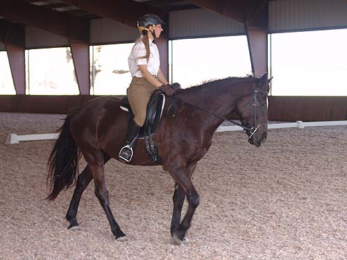

He really liked the
mirror. He thinks he's pretty.
Walking around the ring.
He's been in this ring
for shows and settled nicely.

I still have to work
to ask for bend correctly. An on-going battle.
I think I'm winning
on the bending front.
I forget more at the
trot about asking correctly.
He softens, but doesn't
always come through. It's always improving, but takes time.
He can be very good
at the halt. So much improved in the last few months.
Canter work. Luckily
he doesn't mind the ocassional tap with the spur when I'm not thinking.
Our last couple of rides
we came to an understanding about the transitions. I just have to ask very
quietly and he's happy to give it. If I ask to harshly with seat and legs,
then he gets balky. Light is good.
This was our first canter
in a dressage ring. Everything came up quicker, but when he got it, it
was lovely.
Back to an easy trot.
Another canter. Not
going deep in the corners. That will come.
A little too deep in
the coner for us just yet. Still, he got us out of it.